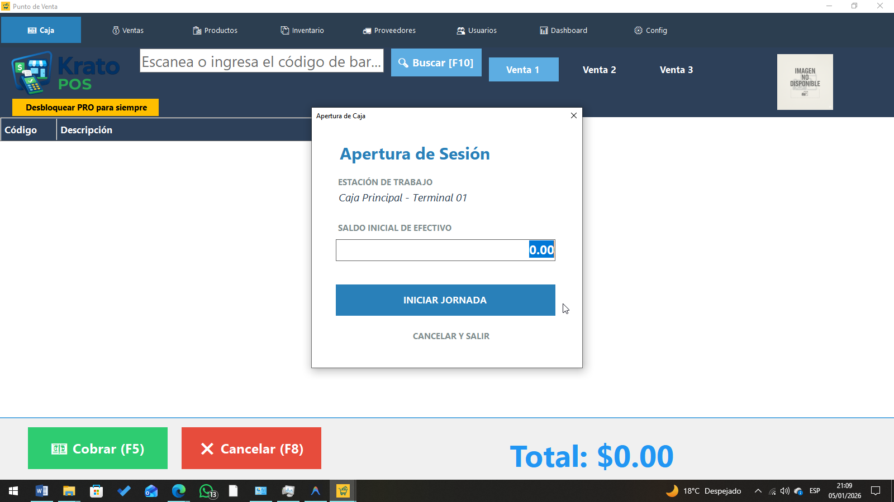

Krato POS
Control total de tu negocio. Sin mensualidades.
🔍 ¿Desconfías del .exe? Hazlo.
No pasa nada. Estás en tu derecho.
Krato POS es software legítimo y eres libre de analizar el archivo
con el antivirus que quieras.
- ✔ Puedes subir el instalador a VirusTotal
- ✔ Analizarlo con Windows Defender
- ✔ Usar antivirus gratuitos como: Avast, Bitdefender Free, Kaspersky Free
⚠️ Advertencia honesta:
Windows suele ser castroso con desarrolladores nuevos.
Si ves el mensaje “Windows protegió su PC”,
no es porque sea un virus, sino porque aún no pagamos
un certificado de firma digital carísimo.
Krato POS NO roba datos, NO instala cosas ocultas y NO se conecta a servidores raros. Es un sistema local para tu negocio. Punto.
Windows 10 / 11 • Instalador oficial

Hecho para negocios reales
Krato POS es rápido, estable y funciona incluso sin internet. Controla ventas, caja y movimientos sin depender de suscripciones.
🎥 Mira Krato POS en acción
🛡️ Instalación segura
Krato POS no contiene virus ni malware. Windows puede mostrar una advertencia por no estar firmado aún.
- ✔ Verificado con antivirus
- ✔ Sin procesos ocultos
- ✔ No roba información